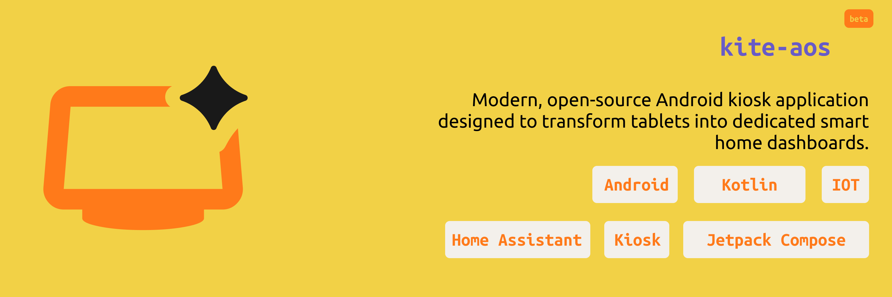
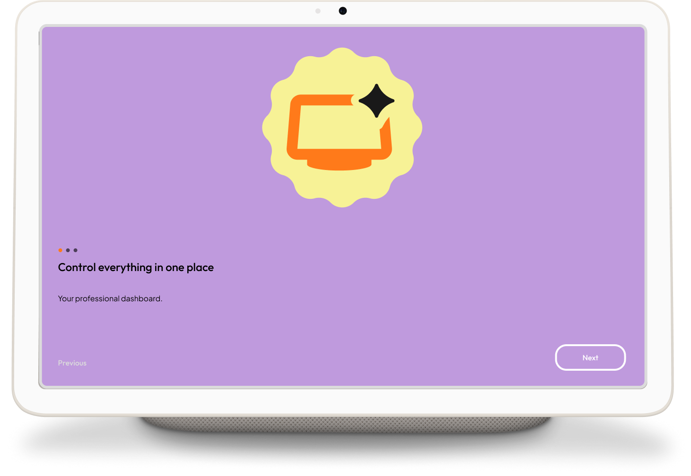
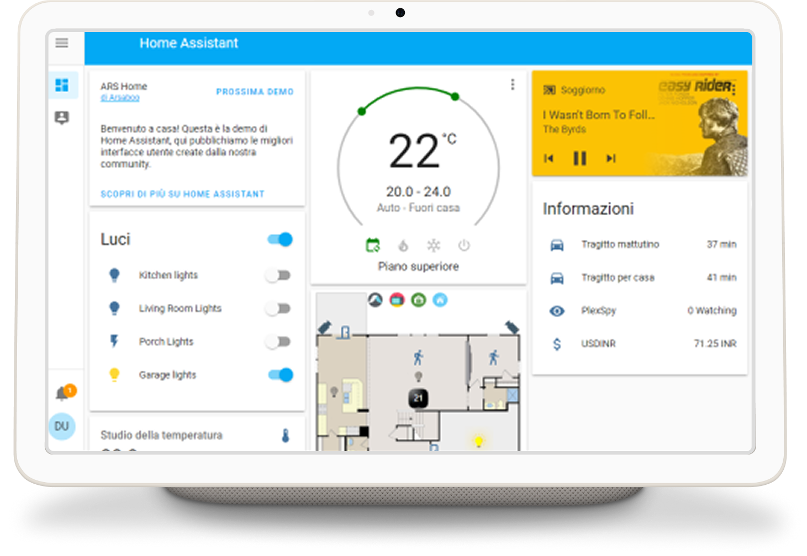
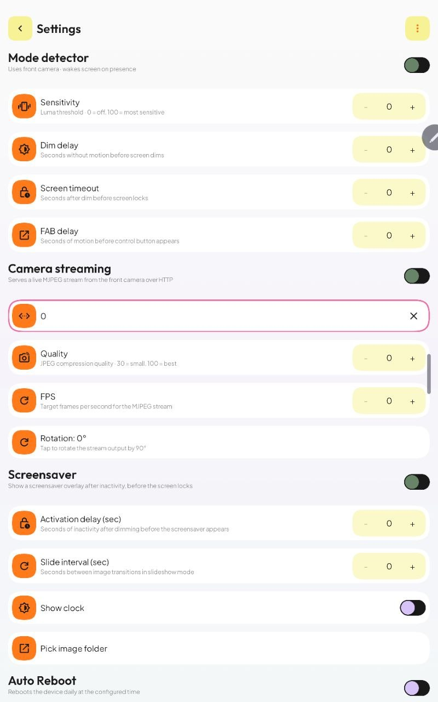
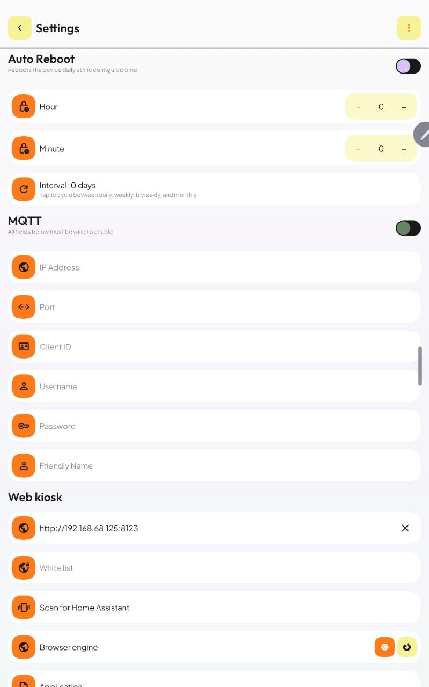
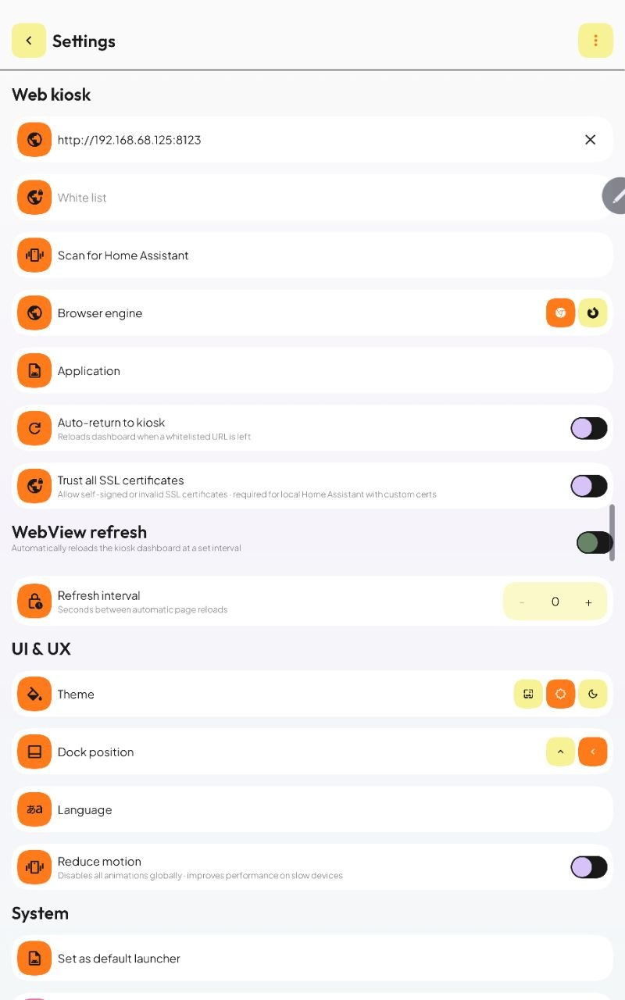
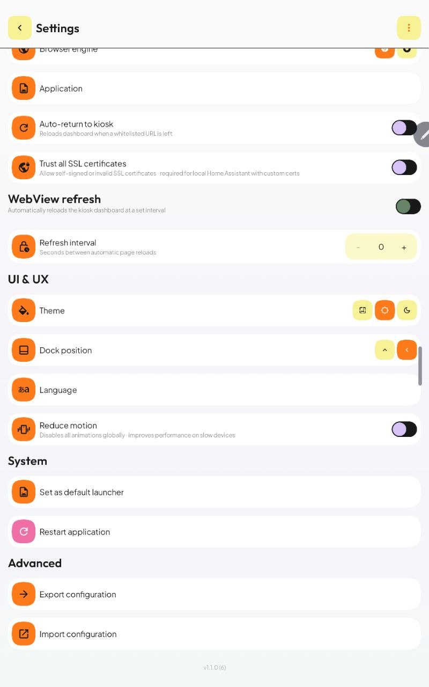

Kite¶

Overview¶
Kite AOS is a modern, open-source Android kiosk application designed to transform tablets into dedicated smart home dashboards. While optimized for Home Assistant, it is designed for any use case requiring a persistent, locked-down web-view interface (e.g., industrial panels, information kiosks, or dedicated web-resource controllers).
Originally developed to solve my personal smart home setup needs, the platform is highly modular. I'm always open to discussions and feature requests to expand its capabilities. Feel free to open an issue!






Demo¶
Core Features¶
- Versatile Web Kiosk: Display any web-based interface in a full-screen, locked-down environment. Choose between Android WebView and GeckoView (Firefox) engines.
- Motion-Aware Intelligence: Automatic display wake-up via CameraX (Luma analysis), eliminating external hardware requirements.
- MQTT & HA Discovery: Seamless integration with Home Assistant. Device state, battery, and motion data are exposed automatically.
- Clean Architecture: A modular system comprising 40+ independent modules for maximum scalability.
- Kiosk Lockdown: Full restriction of navigation gestures, status bars, and system notifications.
Functional Capabilities¶
| Feature | Description |
|---|---|
| Browser Engine | Switchable engine: Android WebView (default) or GeckoView (Firefox) for better WebRTC/camera support. |
| Control Drawer | Side panel (Haze blur) for WebView navigation control and a launcher for whitelisted apps. |
| Hardware Management | Automated screen dimming and forced locking after periods of inactivity. |
| Onboarding Wizard | Step-by-step configuration for system permissions and MQTT connectivity. |
| Custom Launcher | Set Kite as the default Android launcher to prevent users from leaving the kiosk. |
| Auto-Return to Kiosk | Automatically returns to the dashboard 30 s after leaving to an external app. |
| Network Recovery | Detects connectivity loss and automatically reloads the dashboard on restoration. |
| Config Import / Export | Back up and restore all settings as a JSON file via the system file picker. |
| HA Auto-Discovery | Scans the local network for Home Assistant instances and populates the dashboard URL automatically. |
| Screensaver | Image slideshow overlay with optional clock display; configurable activation delay and slide interval; dismisses automatically when motion is detected. |
| MJPEG Streaming | Exposes the front camera as an MJPEG stream (/stream.mjpg) accessible on the local network. |
| Auto-Reboot | Scheduled device reboots on a daily, weekly, bi-weekly, or monthly interval at a configured time; keeps long-running kiosk deployments healthy. |
| Periodic WebView Refresh | Automatically reloads the dashboard at a configurable interval. |
| Reduce Motion | Disables Android animations globally for smoother performance on low-end hardware. |
| MQTT Remote Control | Bidirectional MQTT: control brightness, volume, FAB visibility, and receive device telemetry. |
| Analytics | Pluggable analytics provider (console logging; Firebase Crashlytics in GMS flavor). |
Technical Specifications¶
- Framework: Jetpack Compose for the native UI layer.
- State Management: Orbit MVI.
- Persistence: Proto DataStore for atomic, thread-safe configuration.
- Dependency Injection: Koin.
- Camera: CameraX — Luma analysis for motion detection; MJPEG streaming server at 640×480.
- MQTT: kmqtt-client-jvm with bidirectional telemetry and Home Assistant Discovery.
- Analytics: Pluggable provider pattern — console in FOSS, Firebase Crashlytics in GMS.
- Build System: Gradle Convention Plugins for centralized build logic.
- Build Flavors:
foss(no GMS/Firebase) andgms(full Firebase suite).
Installation & Deployment¶
Quick Install¶
Download the latest APK directly from GitHub Releases — no build step required.
- Download
kite-*.apkfrom the latest release. - Enable "Install from unknown sources" on your device.
- Install the APK and follow the onboarding wizard.
Build from Source¶
Prerequisites¶
- Android Studio Ladybug or newer
- JDK 21
- Android Device (API level 26+)
Build Instructions¶
# Clone the repository
git clone https://github.com/andrew-malitchuk/kite-aos.git
# Generate debug APK
./gradlew assembleDebug
Setup¶
- Deploy the APK to the target device.
- Complete the initial configuration wizard to grant system-level permissions.
- Configure the dashboard URL and MQTT broker credentials.
Roadmap¶
The full roadmap is tracked in ROADMAP.md. Highlights currently in progress:
- Companion HA Entities — expose uptime, app version, IP address, and current URL as Home Assistant sensors.
- Inactivity Page Reset — navigate back to the home URL after a configurable idle period.
- Volume Button Gesture — open the control drawer by pressing a physical volume button N times.
- Time-Based Sleep / Wake Scheduler — define daily on/off rules without requiring Home Assistant automations.
- Remote MQTT Commands — accept inbound commands to control WebView navigation remotely.
Community-sourced items and votes live in GitHub Issues.
Community¶
Join the Telegram channel @kite_aos for:
- Feature discussions — suggest and vote on new capabilities
- Troubleshooting — get help from the community and maintainer
- Tips & tricks — share setups, automations, and HA integrations
- Release announcements — be the first to know about updates
Feedback & Feature Requests¶
For bug reports and tracked feature requests, open an issue on GitHub. For open-ended discussions and quick questions, use the Telegram channel.
Troubleshooting¶
Check out the troubleshooting section for common problems and solutions. For community support, join the Telegram channel @kite_aos — someone has likely seen your issue before.
Contributing¶
Contributions are welcome. Please follow the standard pull request process:
- Fork the repository.
- Create a feature branch.
- Submit a PR with a detailed description of changes.
This project started as a personal tool to cover my specific use cases. If you need functionality that isn't currently supported, let's discuss it in the Issues section before submitting a PR.
Built with Jetpack Compose, Koin, and Orbit MVI.
License¶
Apache 2.0 License
Copyright (c) [2026] [Andrew Malitchuk]
Licensed under the Apache License, Version 2.0 (the "License");
you may not use this file except in compliance with the License.
You may obtain a copy of the License at
http://www.apache.org/licenses/LICENSE-2.0
Unless required by applicable law or agreed to in writing, software
distributed under the License is distributed on an "AS IS" BASIS,
WITHOUT WARRANTIES OR CONDITIONS OF ANY KIND, either express or implied.
See the License for the specific language governing permissions and
limitations under the License.